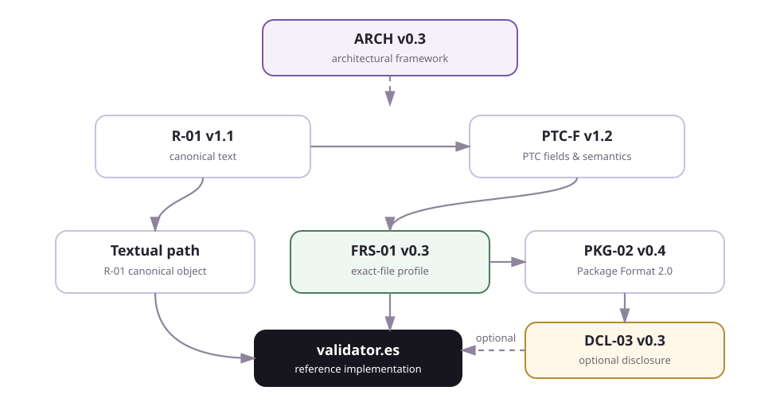

R-01 v1.1Núcleo
Canonical Text
Normalización del texto, objeto canónico, preimágenes y reglas de hash reproducibles.
Publicado
DOI 10.5281/zenodo.21406620
Zenodo ↗PTC
El Protocolo de Transparencia Canalista (PTC) se publica como un corpus abierto de seis documentos con funciones distintas. Validator.es es una implementación de referencia; no es el protocolo.
El núcleo común se combina con perfiles y formatos especializados. ARCH atraviesa el conjunto como marco arquitectónico. FRS-01 puede utilizarse directamente o dentro de Package Format 2.0; DCL-03 es una extensión opcional del camino de archivo exacto.

Las tres piezas comunes que definen el objeto, la declaración y la arquitectura del protocolo.
Normalización del texto, objeto canónico, preimágenes y reglas de hash reproducibles.
Publicado
DOI 10.5281/zenodo.21406620
Zenodo ↗Campos del PTC, orden, valores admitidos y semántica de cada declaración.
Publicado
DOI 10.5281/zenodo.21406680
Zenodo ↗Gobernanza del corpus, relaciones entre especificaciones, adaptadores y modos de operación.
Publicado
DOI 10.5281/zenodo.21406665
Zenodo ↗Perfiles especializados que amplían el uso del núcleo sin redefinirlo.
Vincula una declaración PTC a los bytes exactos de cualquier archivo mediante SHA-256.
Publicado
DOI 10.5281/zenodo.21830122
Zenodo ↗Define el ZIP interoperable para transportar, preservar y reconstruir las piezas verificables.
Publicado
DOI 10.5281/zenodo.21830169
Zenodo ↗Extensión opcional para preparar y verificar un aviso público asociado a contenido con IA.
Publicado
DOI 10.5281/zenodo.21830264
Zenodo ↗validator.es implementa el corpus vigente. Una implementación independiente puede construirse a partir de las especificaciones publicadas sin depender de esta web ni de El Canal.